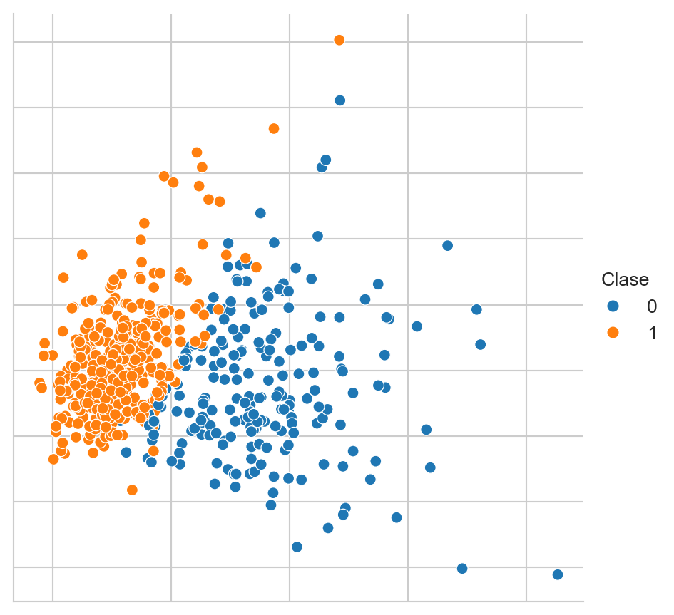
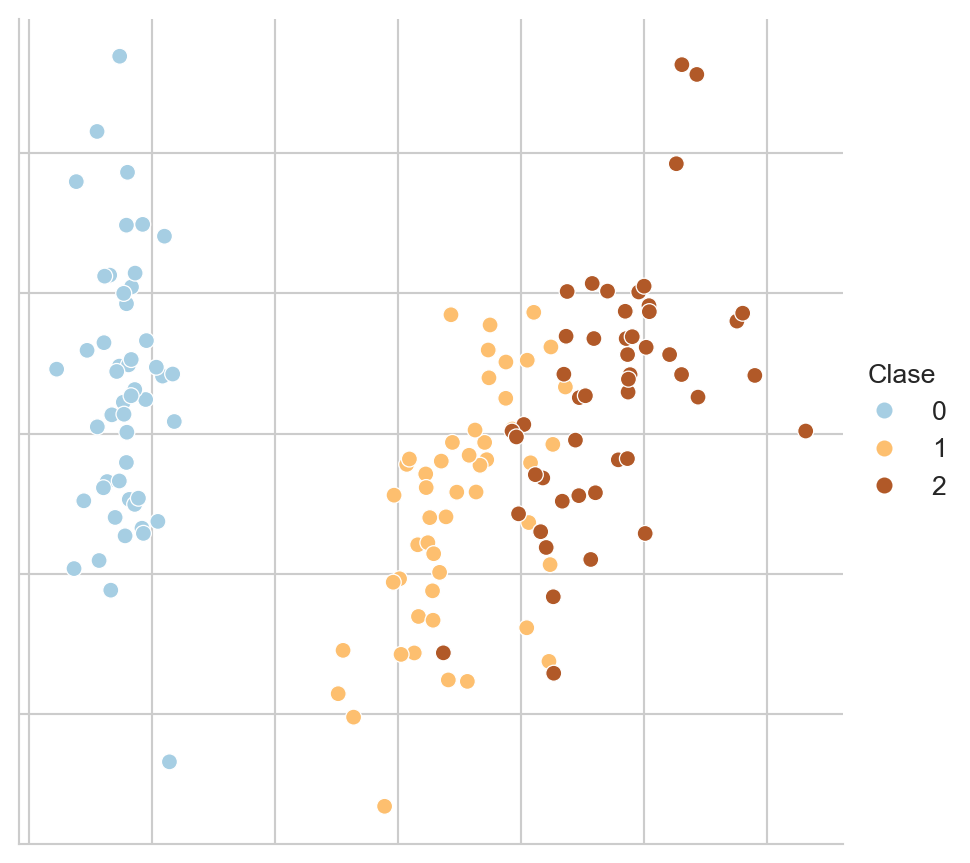
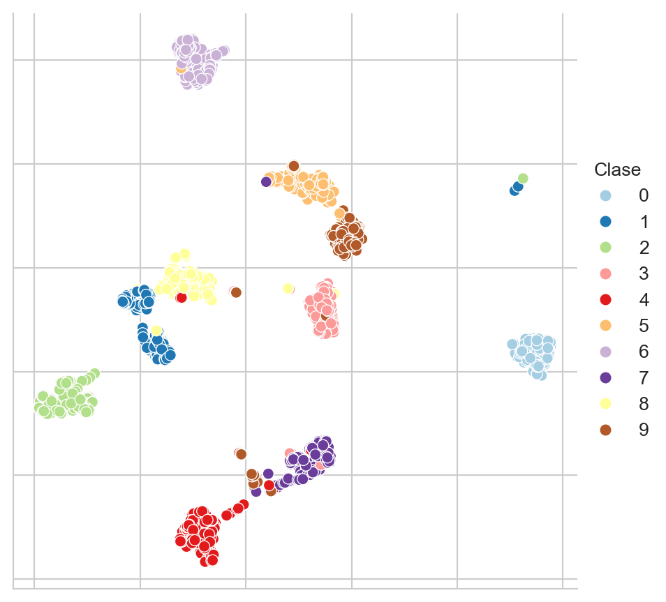
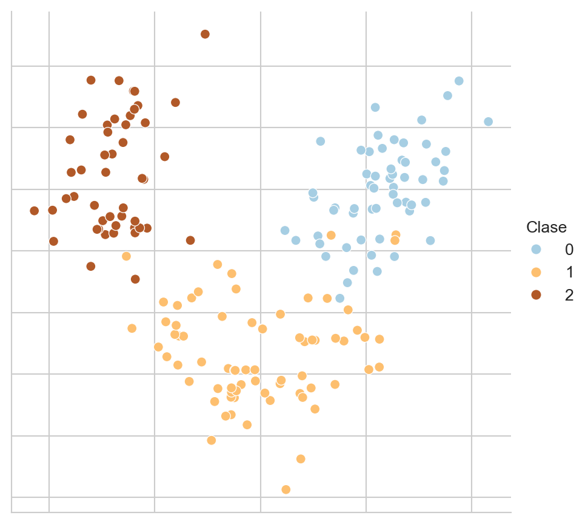

from sklearn.datasets import load_breast_cancer,\
load_diabetes,\
load_digits, load_iris,\
load_wine
from sklearn.preprocessing import StandardScaler
from sklearn import decomposition
from scipy.stats import multivariate_normal
import umap
from matplotlib import pylab as plt
import matplotlib as mpl
import numpy as np
import pandas as pd
import seaborn as snsApéndice B — Conjunto de Datos
El objetivo de este apéndice es listar los conjuntos de datos utilizados en el curso.
Paquetes usados
B.1 Problemas Sintéticos
En esta sección se presentan los problemas sintéticos que corresponden aquellos problemas en los que se conocen todos los parámetros y se usan para mostrar algunas características de los algoritmos.
B.2 Mezcla de Clases
p1 = multivariate_normal(mean=[5, 5],
cov=[[4, 0], [0, 2]])
X_1 = p1.rvs(size=1000)
p2 = multivariate_normal(mean=[1.5, -1.5],
cov=[[2, 1], [1, 3]])
X_2 = p2.rvs(size=1000)
p3 = multivariate_normal(mean=[12.5, -3.5],
cov=[[2, 3], [3, 7]])
X_3 = p3.rvs(size=1000)Figura B.1 muestra estas tres distribuciones.
Código
D = np.concatenate((X_1, X_2, X_3))
clase = [1] * 1000 + [2] * 1000 + [3] * 1000
D = np.concatenate((D, np.atleast_2d(clase).T), axis=1)
df = pd.DataFrame(D, columns=['x', 'y', 'clase'])
_ = sns.relplot(data=df, kind='scatter', x='x',
palette=PALETTE,
y='y', hue='clase')
B.2.1 Clases Separadas
X_1 = multivariate_normal(mean=[5, 5],
cov=[[4, 0], [0, 2]]).rvs(1000)
X_2 = multivariate_normal(mean=[-5, -10],
cov=[[2, 1], [1, 3]]).rvs(1000)
X_3 = multivariate_normal(mean=[15, -6],
cov=[[2, 3], [3, 7]]).rvs(1000)Este problema se muestra en la Figura B.2.
Código
D = np.concatenate((X_1, X_2, X_3))
clase = [1] * 1000 + [2] * 1000 + [3] * 1000
D = np.concatenate((D, np.atleast_2d(clase).T), axis=1)
df = pd.DataFrame(D, columns=['x', 'y', 'clase'])
_ = sns.relplot(data=df, kind='scatter', x='x',
palette=PALETTE,
y='y', hue='clase')
B.3 Problemas de Clasificación
En esta sección se listan los problemas de clasificación utilizados durante el curso. La Tabla B.1 resume las principales características de los problemas utilizados. Se incluye la entropía como una media que está relacionada al desbalance de clases, la entropía está normalizada para que su rango se encuentre entre \([0, 1].\)
| Nombre | Tamaño (\(N\)) | Dimensión (\(d\)) | Número de clases (\(K\)) | Entropía |
|---|---|---|---|---|
| Breast Cancer | \(569\) | \(30\) | \(2\) | 0.95 |
| Iris | \(150\) | \(4\) | \(3\) | 1.00 |
| Dígitos | \(1797\) | \(64\) | \(10\) | 1.00 |
| Vino | \(178\) | \(13\) | \(3\) | 0.99 |
B.3.1 Breast Cancer Wisconsin
El conjunto de datos de Breast Cancer Wisconsin (ver Street, Wolberg, y Mangasarian (1993)) se obtiene con el siguiente código. La Figura B.3 muestra una proyección utilizando PCA de este conjunto de datos.
D, y = load_breast_cancer(return_X_y=True)Código
D = StandardScaler().fit_transform(D)
pca = decomposition.PCA(n_components=2).fit(D)
low_dim = pca.transform(D)
# reducer = umap.UMAP(n_neighbors=5)
# low_dim = reducer.fit_transform(D)
df = pd.DataFrame(low_dim, columns=['x', 'y'])
df['Clase'] = y
fig = sns.relplot(df, kind='scatter',
legend='full', # palette=pal,
x='x', y='y', hue='Clase')
fig.tick_params(bottom=False, top=False,
left=False, right=False,
labelbottom=False, labelleft=False)
_ = fig.set(xlabel=None, ylabel=None)

B.3.2 Iris
Un conjunto clásico en problemas de clasificación es el problema del Iris descrito por Fisher (1936); este problema se descarga con la siguiente instrucción. La Figura B.4 muestra una visualización de estos datos mediante PCA.
D, y = load_iris(return_X_y=True)Código
D = StandardScaler().fit_transform(D)
pca = decomposition.PCA(n_components=2).fit(D)
low_dim = pca.transform(D)
# reducer = umap.UMAP(n_neighbors=5)
# low_dim = reducer.fit_transform(D)
df = pd.DataFrame(low_dim, columns=['x', 'y'])
df['Clase'] = y
fig = sns.relplot(df, kind='scatter',
legend='full', palette=PALETTE,
x='x', y='y', hue='Clase')
fig.tick_params(bottom=False, top=False,
left=False, right=False,
labelbottom=False, labelleft=False)
_ = fig.set(xlabel=None, ylabel=None)

B.3.3 Dígitos
El conjunto de Dígitos (ver Xu, Krzyzak, y Suen (1992)) es un conjunto de clasificación donde se trata de identificar el número escrito en una imagen; este conjunto de datos se descarga utilizando la siguiente instrucción. La Figura B.5 muestra una proyección de estos datos utilizando UMAP con ocho vecinos.
D, y = load_digits(return_X_y=True)Código
pal = mpl.cm.Paired
reducer = umap.UMAP(n_neighbors=8)
D = StandardScaler().fit_transform(D)
low_dim = reducer.fit_transform(D)
df = pd.DataFrame(low_dim, columns=['x', 'y'])
df['Clase'] = y
fig = sns.relplot(df, kind='scatter',
legend='full', palette=PALETTE,
x='x', y='y', hue='Clase')
fig.tick_params(bottom=False, top=False,
left=False, right=False,
labelbottom=False, labelleft=False)
_ = fig.set(xlabel=None, ylabel=None)

B.3.4 Vino
El conjunto de Vino se obtiene con la siguiente instrucción. La Figura B.6 muestra una proyección de estos datos utilizando PCA.
D, y = load_wine(return_X_y=True)Código
pal = mpl.cm.Paired
D = StandardScaler().fit_transform(D)
pca = decomposition.PCA(n_components=2).fit(D)
low_dim = pca.transform(D)
# reducer = umap.UMAP(n_neighbors=5)
# low_dim = reducer.fit_transform(D)
df = pd.DataFrame(low_dim, columns=['x', 'y'])
df['Clase'] = y
fig = sns.relplot(df, kind='scatter',
legend='full', palette=PALETTE,
x='x', y='y', hue='Clase')
fig.tick_params(bottom=False, top=False,
left=False, right=False,
labelbottom=False, labelleft=False)
_ = fig.set(xlabel=None, ylabel=None)

B.4 Problemas de Regresión
En esta sección se listan los problemas de regresión utilizados para ejemplificar los algoritmos y su rendimiento.
B.4.1 Problema Sintético
El siguiente ejemplo es un problema de regresión sintético que se forma de la suma de dos funciones trascendentales como se muestra en el siguiente código.
X = np.linspace(-5, 5, 100)
y = np.sin(X) + 0.3 * np.cos(X * 3.)La Figura B.7 muestra este problema sintético.
Código
df = pd.DataFrame(dict(X=X, y=y))
df.set_index('X', inplace=True)
fig = sns.relplot(df, kind='line')B.4.2 Diabetes
El conjunto de datos Diabetes es un problema que se puederecuperar usando el siguiente código.
D, y = load_diabetes(return_X_y=True)